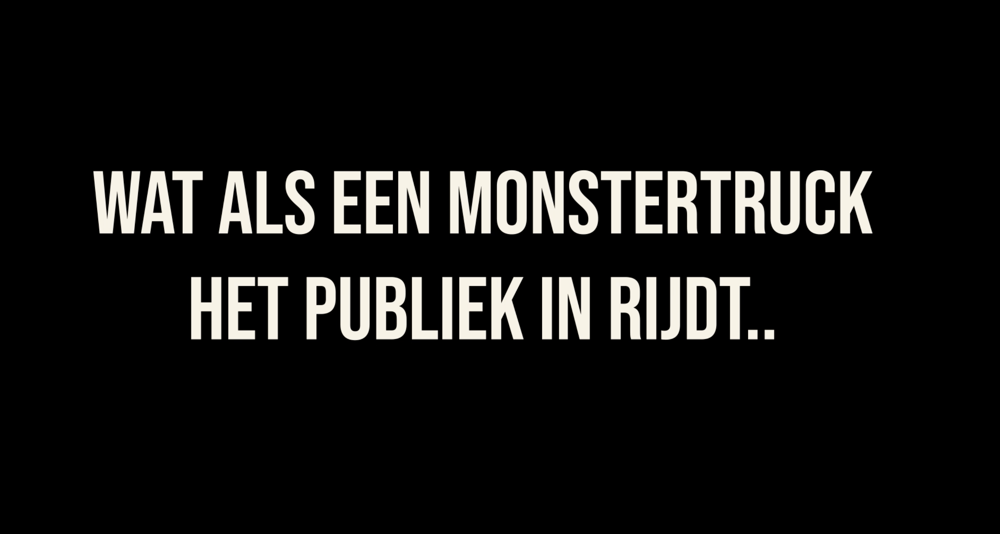

Schoolopdracht podcast monstertruck ongeluk

Voor een schoolopdracht heb ik de opdracht gekregen een podcast te maken met iemand met een bijzonder verhaal. Ik heb ervoor gekozen om het verhaal te vertellen van een van de eerste brandweermensen die ter plaatse was bij het monstertruck ongeluk in Haaksbergen.
Naast de podcast zelf heb ik ook een trailer en drie Instagram stories gemaakt als promotie voor de podcast.
De trailer is gemaakt in Adobe Premiere pro, bekijk hieronder de trailer.
De Instagram stories zijn gemaakt in Adobe Illustrator en geanimeerd in Adobe After Effects. Bekijk de stories hieronder.
Beluister hieronder het hele verhaal.